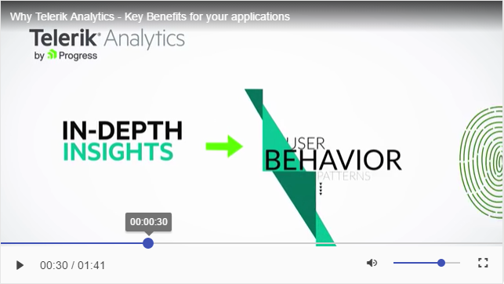

MediaPlayer Overview
The Kendo UI MediaPlayer widget plays video files from static sources or streams online YouTube videos and enriches your website with dynamic content in a user-friendly interface. It provides a styled video UI functionality by using the HTML5 <video> element and brings powerful media capabilities to your applications without the necessity of installing additional plug-ins.
The MediaPlayer also offers tight integration with the YouTube media provider. The MediaPlayer comes with the familiar and straightforward way to use Kendo UI widgets and delivers rich media web experience for websites, blogs, online TV channels, e-commerce pages, and others. In addition to the consistent and elegant built-in skins, this new addition to the bundle possesses the main feature of every Kendo UI widget—it is a useful and convenient tool designed for achieving fascinating results in a sharp time frame.
To respond to cutting-end design practices and trends, the MediaPlayer component provides a responsive layout. This means that its size adapts depending on the capabilities of the client (end user) device and browser. The component automatically resizes its area to display the video in the most suitable possible way within the provided dimensions. The responsive web design of the MediaPlayer is shipped out-of-the-box and intends to save you time and efforts when developing your responsive applications.
Figure 1: A template of the MediaPlayer

Key Features
The Kendo UI MediaPlayer widget:
- Plays any HTML5-supported video formats.
- Plays YouTube videos.
- Delivers a set of elegant skins.
- Delivers a rich built-in toolbar to play or pause the video, control the volume, switch to FullScreen mode, and others.
- Displays a timeline slider with a buffer indicator allowing you to navigate the video.
- Displays a title bar.
- Ships HD source support.
- Responsive layout
Before reading on, make sure you are familiar with the fundamental Kendo UI widget concepts.
Getting Started
When using local sources, consider the video formats supported by the different browsers. For more information on the current supported HTML5 video formats, refer to this article and to other resources on the Web.
Initialize the MediaPlayer
Once the video files are ready, initialize the MediaPlayer by using the div element.
Example
<div id="mediaplayer1" style="width:640px; height: 360px;"></div>
<script>
$("#mediaplayer1").kendoMediaPlayer({
autoPlay: true,
media: {
title: "Our Company Culture - Lesson 1",
source: "Video/video1.mp4"
}
});
</script>
To add multiple sources for the same video, configure the quality-dependent HD feature.
Important
The example on initializing the MediaPlayer above uses the
autoPlayproperty. Because of the mobile considerations listed in this article, browsers on iOS do not automatically play embedded media. This limitation prevents unsolicited downloads over cellular networks at the expense of the user. The user always has to initiate a playback. For more information on this behavior, refer to the article on audio and video HTML. There are other functionalities which may be limited due to iOS restrictions. For more information on this topic, refer to this article and to other available resources on the Web.
Configuration
The MediaPlayer provides properties, methods, and events to match your specific preferences. For more information on its configuration options, refer to the MediaPlayer API documentation.
Add Multiple Sources for Quality HD Feature
When you add multiple sources for the video, an HD button is automatically displayed in the bottom right corner, right next to the FullScreen one. This enables you to select your preferred quality.
Example
<div id="mediaplayer1" style="width:640px; height: 360px;"></div>
<script>
$("#mediaplayer1").kendoMediaPlayer({
autoPlay: true,
media: {
title: "Our Company Culture - Lesson 1",
source: [
{ quality: "480p", url: "Video/video1.mp4" },
{ quality: "720p", url: "Video/video2.mp4" }]
}
});
</script>
Change the Source Dynamically
Players usually feature a different video based on user action. For a basic example and real-time implementation, refer to the section on creating playlists.
Prevent Seeking Forward
Application or business logic usually enforces the user to watch only the currently loaded content without the option to jump forward. The MediaPlayer provides the forwardSeek configuration, which helps to achieve this requirement.
Access Existing Instances
To access an existing MediaPlayer instance, use the .data() jQuery method, executed by the jQuery object of the originating element.
The example below demonstrates how to access an existing MediaPlayer instance.
Example
<button onclick="buttonClick();">Pause Video</button>
<div id="mediaplayer1" style="width:640px; height: 360px;"></div>
<script>
$("#mediaplayer1").kendoMediaPlayer({
autoPlay: true,
media: {
title: "Our Company Culture - Lesson 1",
source: "Video/video1.mp4"
}
});
function buttonClick() {
var player = $("#mediaplayer1").data("kendoMediaPlayer");
player.pause();
}
</script>
Create Playlists
To implement your own Playlist structures, change the source of the MediaPlayer dynamically. For a starting reference, see the MediaPlayer Playlist live sample. It uses the Kendo UI ListView to create a list which holds the videos right next to the MediaPlayer element.
The example below demonstrates a basic way of changing the source of the MediaPlayer.
Example
function buttonClick() {
var player = $("#mediaplayer1").data("kendoMediaPlayer");
player.media({
title: "Our Company Culture - Lesson 2",
source: "Video/video2.mp4"
});
}
Keyboard Navigation
The MediaPlayer supports keyboard navigation. To enable it, use the navigatable property.
The following list provides the built-in keyboard commands of the MediaPlayer:
-
Enter—Opens the video in the FullScreen mode. -
Esc—Exits the FullScreen mode. -
Space—Toggles Play and Pause. -
M—Toggles Mute and Unmute.
Localization
To localize the tooltip texts from the interface, use the configuration options of the MediaPlayer.
Example
<div id="mediaplayer1" style="width:640px; height: 360px;"></div>
<script>
$("#mediaplayer1").kendoMediaPlayer({
autoPlay: true,
messages: {
play: "Wiedergabe",
pause: "Pausieren"
},
media: {
title: "Herbert Grönemeyer - Der Weg",
source: "Video/video1.mp4"
}
});
</script>
For a complete list of localizable messages, refer to the MediaPlayer API documentation.
All Kendo UI widgets, including the MediaPlayer, also allow you to add script files and implement global localization for your application.